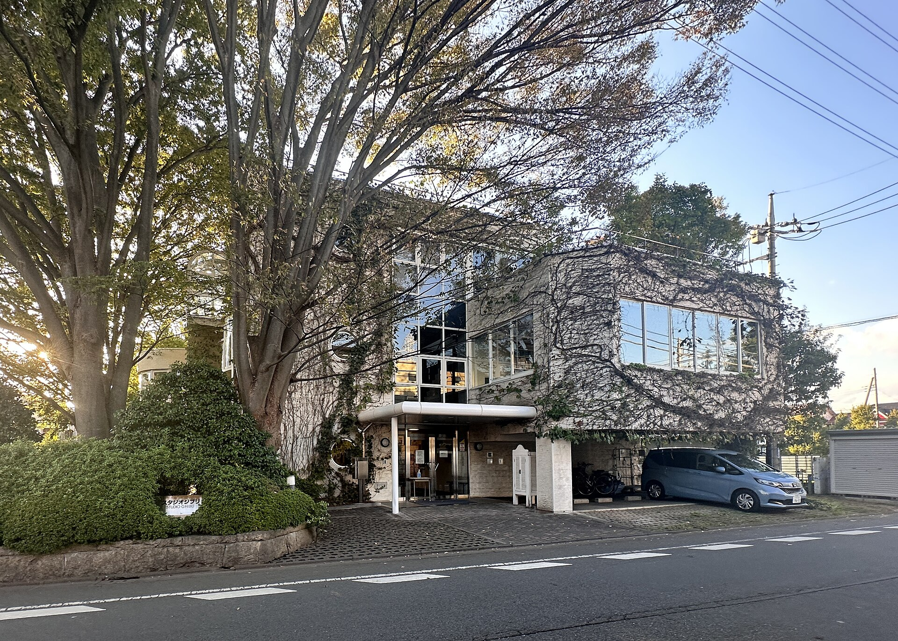
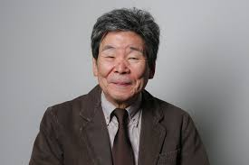

Studios Ghibli
Studio Ghibli (スタジオジブリ) es un estudio japonés de animación, considerado por la crítica especializada y muchos cinéfilos como uno de los mejores estudios de animación del mundo en la actualidad. El estudio es conocido por sus largometrajes animados y también ha producido varios cortometrajes, comerciales de televisión y una película para televisión. Fue fundado el 15 de junio de 1985 por los directores Hayao Miyazaki e Isao Takahata y el productor Toshio Suzuki.
Hayao Miyazaki
Hayao Miyazaki, nacido el 5 de enero de 1941 en Tokio, Japón, es un reconocido director de cine y animación...
Isao Takahata
Nacido en Ise, en el centro del país, el 29 de octubre de 1935...